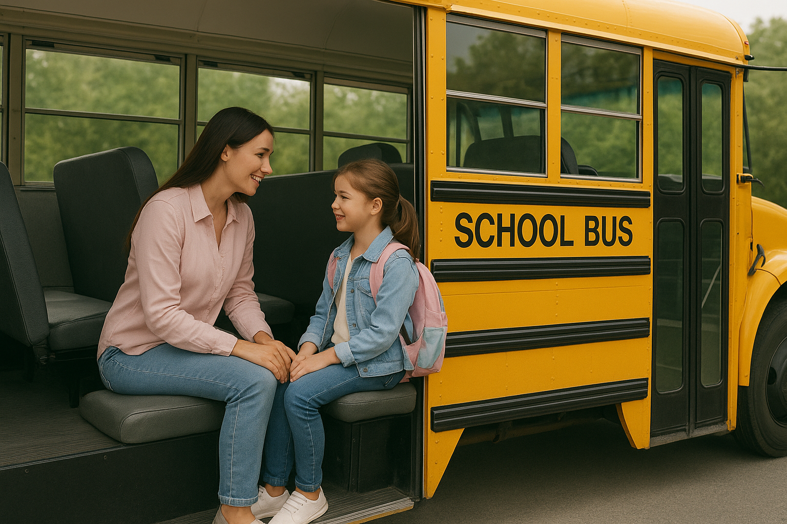

Nada como a acomodação!

O Bem-Estar Que Acompanha Cada Trajeto
Na Transportin', acreditamos que o caminho até a escola deve ser tão acolhedor quanto o destino final. Por isso, oferecemos um transporte pensado para proporcionar conforto real a cada aluno, desde os primeiros minutos da viagem até o desembarque.
Nossos veículos são climatizados, limpos e cuidadosamente organizados, garantindo um ambiente tranquilo e agradável para crianças de todas as idades. Assentos confortáveis, espaço adequado e uma condução suave tornam o trajeto mais leve, seguro e relaxante.
Além disso, nossa equipe trabalha para criar uma experiência acolhedora: recebemos cada criança com atenção, carinho e respeito, criando um ambiente onde todos se sentem à vontade.
Aqui, conforto não é apenas um detalhe é parte essencial do nosso cuidado diário.